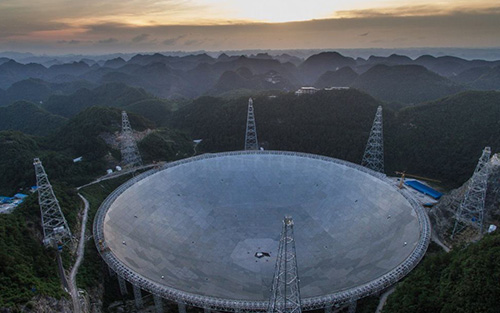
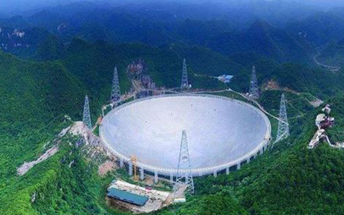

中国天眼
项目介绍
在2013年，一座口径达500米的球面射电望远镜FAST，将在贵州喀斯特洼地建成。该项目首席科学家、中科院国家天文台南仁东研究员在上海召开的“中国天文学会2006年学术年会”上表示，与世界现有最大口径100米望远镜相比，其观测能力提高了10倍，并且将在未来20~30年保持世界领先地位。
被评为人类20世纪十大工程之首的美国Arecibo 300米望远镜相比，其综合性能提高约10倍。
作为世界最大的单口径望远镜，FAST将在未来20～30年保持世界一流设备的地位。
“中国天眼”意味着什么？
世界第一大单口径射电望远镜
天眼 — 展示


